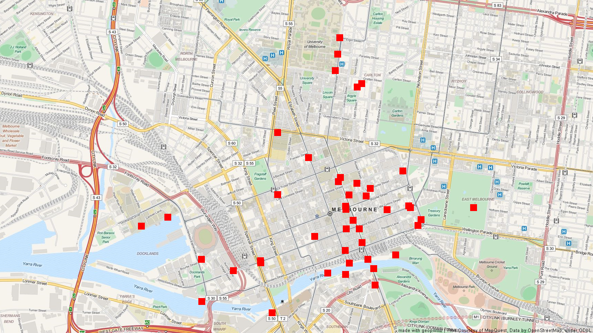
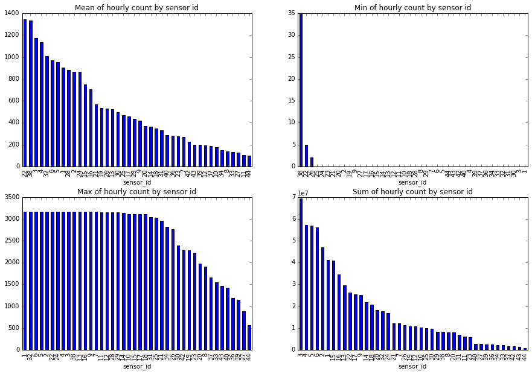
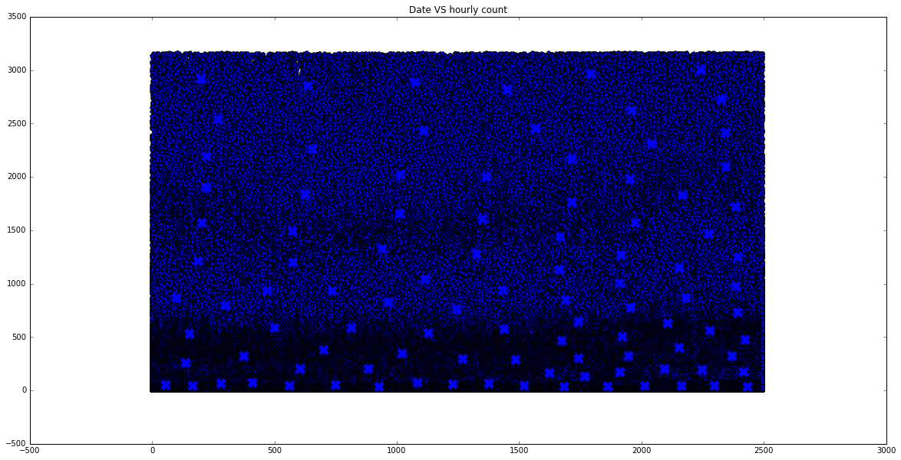
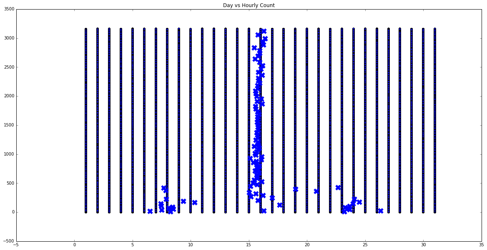
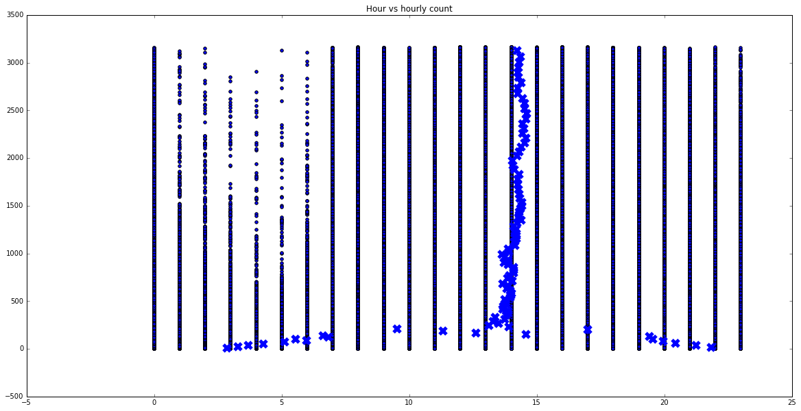

A look at Pedestrian Whereabouts in Melbourne
The Data
An updated version of the data can be found HERE And the specific version used for these visualizations can be found HERE and HERE For a more technical look at the data provided please have a look at the python notebook containing all the code as well as explanations HERE
It revolves around pedrestian data from Melbourn and it gives us a window into where pedestrians are throughout the day. The two tables consist of information about a number of sensors and a number of obervations. Today there is 44 sensors across Melbourne. The first sensors were installed in 2009 and since then more have been added.
Each sensor is able to determine the number of pedestrians in it's proximity, every hour each sensor is sampled, giving us a total of almost 1.4 million rows to analyze. Each row contains information about the longitude and latitude of the sensor, which sensor it is, the date and time of the observation aand an hourly count amongst a few lesser interesting metrics.
A closer look at the data!
Below is an image showing the locations of the sensors throughout Melbourne just to get an idea about what we're looking at.
And here is another image this time we're focusing on the number of pedestirans observed by the different sensors.
Curiously enough some of the sensors always senses people nearby, this can be seen in the bar chart showing the minimum houry count. Whether this is actually how it is we cannot say, however it seems unlikely that there are at least 35 people by sensor 38.
Clustering
We are going to look at how many people are out during the day, to do this we have looked at how the centroids generated by clustering are spread out.For the first and perhaps most interesting case where we are looking at the date and the time vs the number of predestians. We get this trend with clusters lining up vertically, this might suggest that more people are our and about during certain dates.
This time we're looking at the data with day of the week along the x-axis, this time we see something rather strange. The centres of the clusters are themselves centered around a specific day, around the 16th every month.
Lastly we are looking at a very similar plot to the previous this time we're looking at the hour along the x-axis. And again we see this trend with the centroids clustering up.
As mentioned above, more analysis and a deeper explanation can be found in the describer notbebook Here